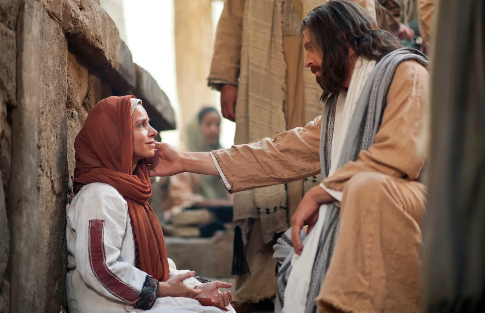

5 MINUTE TRAINING
The Following Passages are from “Ministering—“That Ye Love One Another; as I Have Loved You,” Sister Kristin M. Yee (April 2026 general conference)
Read the complete talk“When we choose to minister in our inspired assignments and our daily interactions, we are helping to bless someone’s father, someone’s sister, someone’s son. When we minister, we are helping to answer each other’s prayers. We are the Savior’s hands. Oh, how I am grateful for all those who have blessed families like mine by ministering with compassion.
I know the Lord is aware of you and your struggles as you strive to keep your covenants and minister to others. He has promised blessings and divine help for you and your family as you exercise your faith to serve Him.”
“We’ve been sent here to learn to love God and each other as the Savior did—to love in sacrificial and transformational ways, ways that will bring our greatest happiness. Through the Savior’s Atonement we can come to love in ways that may feel impossible. Elder Quentin L. Cook taught, ‘Our love of God and our fellow man is the ultimate test of the condition of our spirit.’
Choosing to minister isn’t always convenient or comfortable. It requires sacrifice, faith, vulnerability, and trusting things will work out as we let God prevail. When we pause and choose to care for someone over something, His Spirit and love can enter in and we can receive the peace and perspective that we really need."
Consider ways you can allow God to prevail you your life more.
As we minister in faith, we do not go alone. The Lord will be with us. He will “provide [the] means whereby [we] can accomplish the thing which he has commanded”—including the blessing of God’s priesthood power as we keep our covenants and His priesthood authority to represent Him through our assignment. The Lord knows the hearts of those we minister to. He loves them and He loves you. He will help you to bless them in the ways they need.
Think of the significance of our ministering assignments.
While we begin our ministering council, consider the “significance of our ministering assignments can have if you exercise Faith in Jesus Christ”